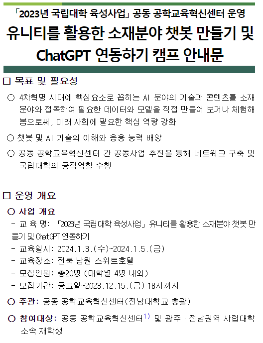
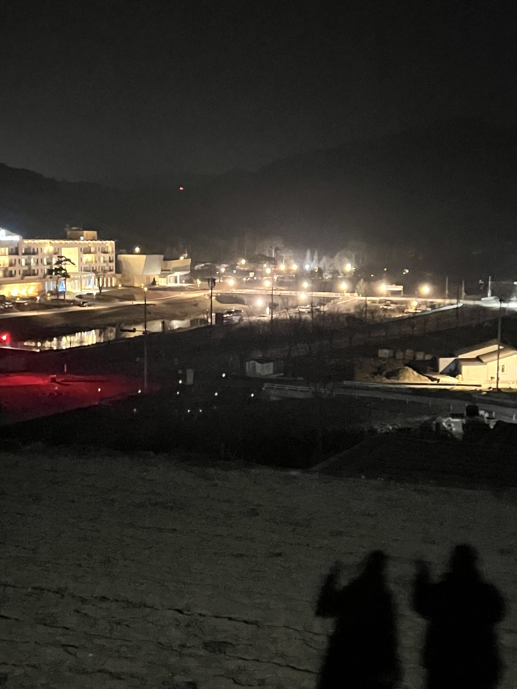

< 유니티를 활용한 챗봇 만들기 및 ChatGPT 연동하기 캠프 >
유니티를 활용한 챗봇 만들기 및 ChatGPT 연동하기 캠프 프로그램은
전남대학교 총괄로 공동 공학교육혁신센터에서 주최하는 프로그램이다.
신청기간은 23.12.04(월) ~ 23.12.15(금),
교육기간은 24.01.03(수) ~ 24.01.05(금)까지 3일간 진행되는 프로그램이었다.
아래는 그때 당시 공지글이다.
* 유니티를 활용한 챗봇 만들기 및 ChatGPT 연동하기 캠프 공지글 링크

< 프로그램 참여 계기 >
내가 유니티를 활용한 챗봇 만들기 및 ChatGPT 연동하기 캠프에 참여하게 된 계기는
JICA에서 교육 한번 받은 이후로 비슷한 교육 프로그램 관련 메일이 계속 왔었다.
그 중에 유니티를 활용한 챗봇 만들기 및 ChatGPT 연동하기 캠프에 관한 프로그램 메일이 왔었고,
친구랑 나는 그 메일을 보자마자 바로 신청을 넣었다.
남원 호텔에 가서 2박 3일 동안 10시부터 21시까지 교육을 받는 것이기 때문에
제대로 무언갈 배울 생각에 설레었던 것 같다.
게다가 그 당시에 한창 유행하던 ChatGPT를 사용하는 것이니까
무엇이든 나에게 도움이 될 것 같았다.